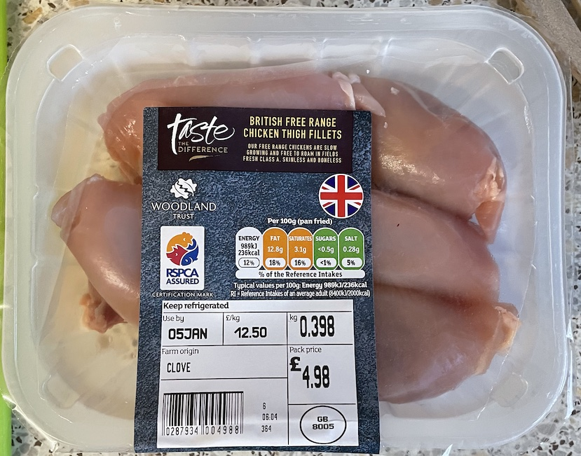
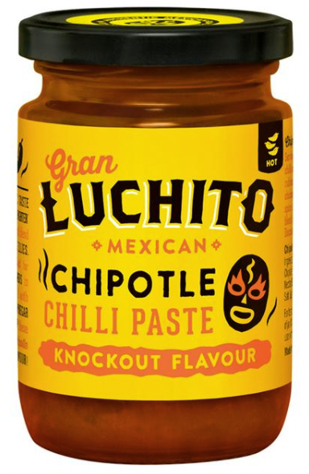

Chicken tinga
Onions
- Fry on low heat for 7 mins
- olive oil
- 2 onions (1 red, 1 white)
- Add and cook for 2 mins
- 3 cloves garlic
- 1¼ tsp sweet smoked paprika
- ¾ tsp cumin
Slow cooker
- Add to slow cooker with onions
- 6 boneless and skinless chicken thighs (400g after trimming)
- 50g chipotle paste
- 1 tin chopped tomatoes
- 2 tbsp brown sugar
- ½ tsp salt
- Cook on high for 3½ hours
- Remove chicken and use two forks to tidy and shred on chopping board
- Add and heat for 30 mins
- 1 tin black beans drained
- shredded chicken
Serving
- Serve with in wraps with
Notes
- Made: 30 Aug 2022
- Try draining when hot to reduce liquid or make well in sauce and remove collected water
- chipotle paste in small 100g bottle
- Reduced chipotle and added paprika and cumin for more flavour less heat
- Original recipe
Pics

